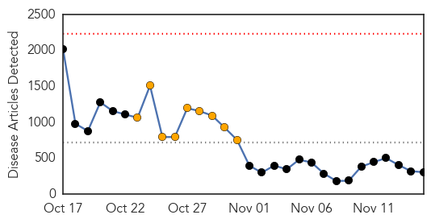
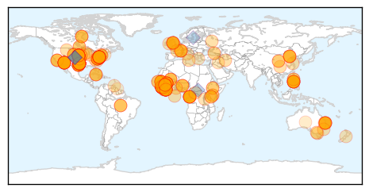
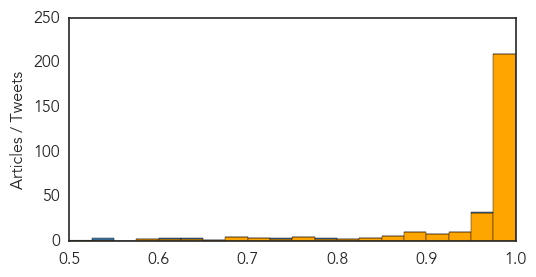
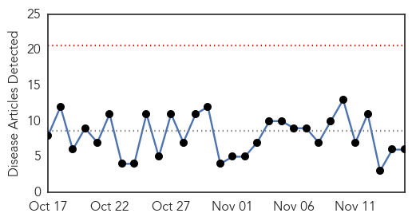
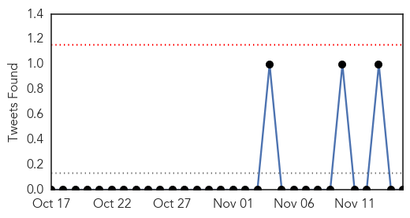
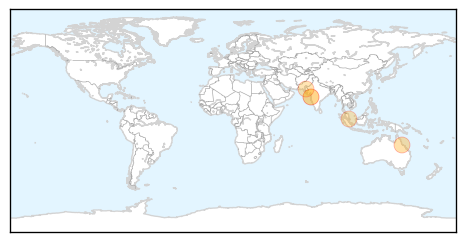

Ebola
30-Day Web Trend
0 alerts, 9 warnings

30-Day Twitter Trend
5 alerts, 0 warnings

Article Locations
Article Confidences
Top Articles:
- 1.000
- CDC Ebola expert tells Tucson audience they're making headway ag
- 1.000
- Local agencies take precautionary measures for Ebola
- 1.000
- Liberia to end Ebola state of emergency Republican American
- 1.000
- doing the math
- 1.000
- Ebola outbreak: Drug banned in US given to British soldiers fighting the virus in West Africa
- 1.000
- Doctors Successfully Give Kidney Dialysis to Ebola Patient in the US
- 1.000
- Ebola death toll rises to 5,177
- 1.000
- Ebola-infected doctor from Sierra Leone arrives in US
- 1.000
- Ebola outbreak: Doctor arrives in Nebraska
- 1.000
- Surgeon with Ebola arrives in US for treatment
- 1.000
- Doctor infected with Ebola flown to US
- 1.000
- Congo Free of Ebola, Danger of Virus Remains
- 1.000
- Ebola-infected Sierra Leone doctor 'extremely ill' in US
- 1.000
- New Details About Ebola In Dallas Revealed In CDC Report
- 1.000
- Farsnews
- 1.000
- Ebola outbreak: Doctor arrives in Nebraska
- 1.000
- Mali Already Has An Ebola Cluster: Can The Virus Be Stopped?
- 1.000
- Congo says its separate Ebola outbreak is over
- 0.999
- Philippine soldier under tight watch for showing Ebola-like symptoms, Others news, Health News, AsiaOne YourHealth
- 0.999
- 'Critically ill' Sierra Leone surgeon flown to US for Ebola treatment
- 0.999
- Congo declares its Ebola outbreak over
- 0.999
- Ebola: Sierra Leone doctor arrives in US
- 0.999
- Ebola-infected Sierra Leone doctor gets treated in US
- 0.999
- Doctor who contracted Ebola in Sierra Leone arrives in Nebraska for treatment
- 0.999
- Senegal partially reopens borders with Ebola-hit states
- 0.999
- Mali toughens anti-Ebola border checks
- 0.999
- Senegal Partially Reopens Borders with Worst-Hit Ebola States — Naharnet
- 0.999
- Latest US Ebola patient dies
- 0.999
- DR Congo declares itself Ebola-free
- 0.999
- Sierra Leone doctor with Ebola evacuated to U.S.
- 0.999
- Ebola-infected doctor from Sierra Leone arrives in US
- 0.999
- Dallas County monitoring another traveler for Ebola after return from West Africa
- 0.999
- A look at Ebola treatment in the US by numbers
- 0.999
- DR Congo declares itself Ebola-free
- 0.999
- Surgeon with Ebola in Omaha for treatment
- 0.999
- Ebola cases plummet in Liberian hot spot as aid groups gain trust
- 0.999
- Ebola death toll tops 5000; Mali quarantines 90
- 0.999
- World View: Ebola Cluster Growing in Mali, Hundreds Possibly Exposed
- 0.999
- DR Congo declares itself Ebola-free
- 0.999
- Readiness a key to containing Ebola, doctor says
- 0.999
- Nebraska Medical Center Says Ebola-Infected US Doctor 'Critically Ill'
- 0.999
- Chinese Medical Workers Arrive in Liberia to Help Fight Ebola Virus
- 0.999
- A look at Ebola treatment in the US by numbers
- 0.999
- A look at Ebola treatment in the U.S. by the numbers
- 0.999
- Senegal partially reopens borders with worst-hit Ebola states
- 0.999
- Ebola Strikes Mali Just as Vaccination Effort Gets Under Way
- 0.999
- A look at Ebola treatment in the US by numbers
- 0.999
- Ebola Virus Infected Physician Arrives in U.S. Today From Sierra Leone
- 0.999
- China sends medics & experts to West Africa
- 0.999
- Ebola-infected doctor from Sierra Leone arrives in US
Showing top 50 articles...
Top Tweets:
- 0.955
- RT: Ebola update: 3 confirmed cases in Mali, 4 deaths. Weekly incidence rising in Sierra Leone and declining in Liberia http://t.…
- 0.901
- RT: Distribution of Ebola cases, 21d & totals Guinea, Liberia, Mali & Sierra Leone WHO SitRep 14NOV http://t.co/cyY8WrApE1
- 0.897
- Message personnel de Tiken Jah Fakoly sur le virus Ebola. AfricaStopEbola UnitedAgainstEbola http://t.co/faeiW8wm6m
- 0.867
- Sierra Leone doctor with Ebola evacuated to U.S. http://t.co/0kwaoSTbjz
- 0.823
- RT: Ebola Ebola-infected doctor from Sierra Leone flown to US http://t.co/u3qgU6wwn6 http://t.co/bP0NpXCNqs
- 0.799
- RT: 1000+ new Ebola cases in Sierra Leone in last 3 wks & @UNMEER says SL has just ~15% of beds needed. Up to world to en…
- 0.789
- Sierra Leone national with Ebola coming to the U.S. for treatment http://t.co/PPxjLdX5EY
- 0.749
- RT: L'imam de Kouroumalé a contaminé au moins 5 pers : un infirmier, un médecin, son fils et son logeur Mali Ebola
- 0.708
- RT: Nebraska hospital to receive Ebola patient transported from Sierra Leone, official says. http://t.co/mWoofFgxEh
- 0.669
- Doctor is positive & in isolation; 1 other in isolation; Deux nouveaux cas du virus Ebola au Mali http://t.co/05tdueUmM0 via
- 0.653
- ICYMI: The international community must get ahead of Ebola outbreak - @UNBanbury talks w/ @UN_Radio on EbolaResponse http://t.co/dm7RqFihdr
- 0.635
- PNG prepares for Ebola risk http://t.co/KACNcUuFrc
- 0.629
- So what is different between Liberia and Sierra Leone in terms of Ebola control? At the peak in Liberia, there were beds for ~18% of... 1/n
- 0.615
- RT: Ebolajournalistiken riskerar förvärra afropessimismen till renodlad afrofobi Ebola africastopebola http:/…
- 0.569
- Le magazine du 15 novembre 2014 : Virus Ebola, l' ordre des médecins inquiets http://t.co/Vytlexxf6q
- 0.547
- RT: West African artists release a song about Ebola BandAid30 AfricaStopEbola DoTheyKnowThereAreAfricanMusiciansAtAll https:/…
- 0.531
- RT: Liberia needs "long-term investment to build up health systems to prevent outbreaks [like Ebola] from happening" http…
Dengue Fever
30-Day Web Trend
0 alerts, 0 warnings

30-Day Twitter Trend
0 alerts, 0 warnings

Article Locations
Article Confidences

Top Articles:
- 0.996
- Wary of mutations, BMC sends samples to Pune, Lucknow
- 0.990
- Qld breakthrough could help treatment of leukaemia
- 0.941
- Success story: Swat saps the death out of dengue
- 0.891
- Petition holds ‘sluggish bureaucracy’ responsible for spread of dengue larvae
- 0.855
- Health and Utilities — a partnership that works
- 0.532
- BMC officials to inspect seized cars for mosquitoes
Top Tweets:
- 0.573
- Flavivirus news: Health Minister launches Dengue Fever week - Fiji Times: Fiji Broadcasting Cor... http://t.co/YGiFYz1cXQ pathogenposse